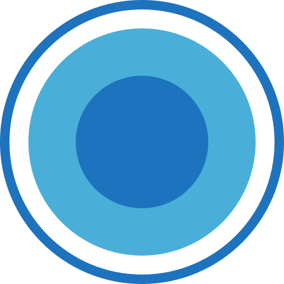

POČETNA
POČETNA PAKETI
PAKETI DIJALOG
DIJALOG REŠAVANJE PRIGOVORA
REŠAVANJE PRIGOVORA RAZGOVORI
RAZGOVORIPRODAJNI DIJALOZI
-
 Osnovni “kostur” dijaloga
Download -
1. PREDSTAVI SEBE
Dobar dan, ______ ovde, iz kompanije Alfa Asistencije POMOCI NA PUTU, Milane vi ste?
2. PREDSTAVI FIRMU
Moje poštovanje ______, ja vas pozivam direktno iz kompanije Alpha, mi smo jedna od vodećih kompanija koja se bavi uslugama pomoći na putu širom Evrope, sa sedistem naše firme INTERSALONIKA u Grčkoj, već 20 godina. Do sada smo obezbeđivali samo kompanije (pravna lica), a na zahtev naših zadovoljnih korisnika nakon izvršenih asistencija, doneli smo odluku da pomognemo i fizičkim licima, i da njima obezbedimo bezbednu vožnju i uštedimo novac.
Vaš broj telefona sam dobio/la po preporuci (Naš marketing tim je organizovao kampanju "preporuci prijatelja" u saradnji sa nasim saradnicima na teritorije cele Srbije). Kad god se neko kod nas obezbedi preporuče najbolje prijatelje i drage ljude, tako su i vas preporučili da i vas obezbedimo jer je ovo svakom vozacu potrebno.
3.PREZENTACIJA SA KUPCEM U SCENARIJU - STAVKE UZ 2 ZAKONA
Naš paket pomoći na putu obuhvata DVE ASISTENCIJE u toku godine KADA Vaš automobil stane NA TERITORIJI Srbije I celog regiona (CG, BIH, HR, MA)
______ seli ste u auto, krenuli na posao, da pozavršavate svakodnevne obaveze ili na duži put sa vašom porodicom i prijateljima i VAŠ AUTO JE STAO! Po zakonu Srbije KADA auto stane Vi morate da sklonite auto sa puta u roku od 30min.Ne možete kao nekada da zovete brata, kuma da Vam pomognu jer je zabranjeno privatno šlepanje, kazne su i za njega i za vas od 15 do 30000. A privatne šlep službe što bi naš narod rekao “deru kožu s leđa“. (pr)
Upravo zbog toga je Vas i Vaš prijatelj i preporučio. Jer KADA ste obezbeđeni kod nas i kada vam auto stane Vi tih problema nemate. MI BRINEMO O VAMA i jedino što Vam je potrebno jeste da nas pozovete. Mi stižemo do Vas u rekordnom roku i rešavamo problem na licu mesta kada je manji kvar u pitanju, pukla VAM je guma, ispraznio VAM se akomulator, ostali ste bez struje, goriva, te sitne kvarove rešavamo na licu mesta i Vi nastavljate vožnju dalje i stižete na vreme GDE STE se I uputuli. *ovde tražite informaciju odakle je ako je nemate od pocetka
Kada auto ne može da se popravi na licu mesta, otisli ste(navesti primer gde)tada imate šlepanje od 100 km do prvog servisa ili kući na vasu adresu. Ne morate da razmisljate JER MI BRINEMO O VAMA i potpunio besplatno slepamo vaš auto 100km(po 50km u oba pravca) takodje brinemo i o svim putnicima, porodici ko god da je u tom trenutku bio sa vama u vozilo, ne ostavljamo vas na putu da se sami snalazite( taxi, autobus) vec ORGANIZUJEMO prevoz kako za vas tako I za sve putnike (zena, deca)upravo tamo gde se slepa I vozilo.
Kada je saobracajna nesreća, havarisano vozilo ili nešto ozbiljnije imate mogućnost čuvanja vozila 2 dana, taman toliko dok ne budete bili u mogućnosti da dođete po svoj automobil.
Takođe imate i izvlačenje vozila do 50e (primer)
Ono što je takođe važno da vam napomenem, kada je auto stao(primer) kvar je ozbiljniji I skuplji a hocete da popravite vozilo i nastavite put dalje, imate opciju garancije za budžet za popravku vozila do 500e, koja podrazumeva da ukoliko Vi nemate dovoljno novca kod sebe neko u vaše ime donese 500e u poslovnicu ili uplati ALPHI, a onda mi u inostranstvu damo garanciju i platimo popravku i regulisemo sve upravo tamo gde se nalazite.
Tako da Vi imate brigu manje, GDE GOD I ŠTA GOD da se dogodi narednih 365 dana kako za Vas tako i za Vašu porodicu NA TERITORIJI CELE SRBIJE I REGIONA (CG, BIH, HR, MA)
4.AKTIVACIJA
______ sve sto je meni potrebno kako bih i Vas obezbedio/la su registracije i marka vašeg automobila, a naš paket pomoći na putu za vas za narednih godinu dana je 4680din.
5. CTA!
Pa hajde onda (Ime) da Vas obezbedimo.Koji auto Vi vozite?
- ______ šta je to sa (marka auta), tri asistencije od sinoć sam imao/la)
- (Model auta) ( Ubacite marku auta koju vam klijent kaže)
- A (model auta)? Koje je godište Vaš auto?
- 2009? Baš sam imao asistenciju, moj klijent Milan Janković, isto vozi (model auta) samo što je njegov 2010 godište, on je tu iz ______ NASTAVITI SCENARIO
- Zato se vi sada obezbedite, da ne razmisljate narednih godinu dana. Još mi je potrebna vasa REGISTRACIJA kako bih vas obezbedila? Koje su vase registarske oznake?6. DODATNE INFORMACIJE
Kako bi naši momci lakše uočili vaše vozilo kad dođe do asistencije još mi je samo potrebna boja vašeg automobila?
- NAČIN ISPORUKE(ugovori, datum dostave, važenje ugovora, placanje pri preuzimanju, postarina)
- ADRESA na koju se salju ugovori i na koju će se šlepati.
*PREPORUKE7. REZIME
- Kao što smo se dogovorili paket vas stize ______, od 9-15h budite kući obavezno da to preuzmete Vi ili neko od ukucana, (da mi se ne vraća, odbija mi se od plate 300 din a niste vi meni jedini dana... )jel dogovoreno?" dajete kuriru 4680.00 dinara i 360.00 dinara za dostavu.
- A ono sto je meni preostalo je da kao vozac vozacu od srca pozelim mirnu i bezbriznu voznju, I dobrodoslicu u nasu ALFA kuću. MI SADA BRINEMO ZA VAS!
-
Delta paket “kostur” dijaloga
Download -
1. PREDSTAVI SEBE
Dobar dan, ______ ovde, iz kompanije Alfa Asistencije POMOĆI NA PUTU, Milane vi ste? Moje poštovanje ______, drago mi je da sam Vas dobio/la.
2. PREDSTAVI FIRMU
Zovem Vas direktno iz kompanije Alpha, mi smo jedna od vodećih kompanija koja se više od 20 godina bavi pružanjem usluga pomoći na putu na teritoriji cele Evrope, sa sedištem naše firme INTERSALONIKA u Grčkoj. Od nedavno smo otvorili naše predstavništvo u Srbiji, i već smo prepoznati kao pouzdan partner od strane vozača kojima je pomoć na putu neophodna i koji su nam ukazali svoje poverenje.
Vaš broj ______, sam dobio/la po preporuci od vašeg dobrog prijatelja a NAŠEG aktivnog korisnika, koji mi je rekao da vas OBAVEZNO pozovem da se i Vi OBAVEZNO obezbedite jer kaže da ste i vi svaki dan za volanom i da je i vama, kao svakom savesnom vozaču, pomoć na putu neophodna, a radi se o vašem dobrom prijatelju koji je mislio na vas i vašu porodicu ______.
3.PREZENTACIJA SA KUPCEM U SCENARIJU - 3 STAVKE UZ 2 ZAKONA
Naš paket pomoći na putu obuhvata JEDNU ASISTENCIJEU u toku godine KADA Vaš automobil stane.
______, seli ste u auto, krenuli na posao i VAŠ AUTO JE STAO! Po zakonu Srbije KADA auto stane Vi morate da sklonite auto sa puta u roku od 30min. Ne možete kao nekada da zovete brata, kuma da Vam pomognu jer je zabranjeno privatno šlepanje, kazne su i za njega i za vas od 15 do 30.000din, a privatne šlep službe, što bi naš narod rekao “deru kožu s leđa“. Naš najgori dan, je njihov najbolji dan.
Upravo zbog toga je Vas, Vaš prijatelj ______ i preporučio. Jer KADA ste obezbeđeni kod nas i kada vam auto stane, Vi tih problema nemate. Meni je ______ prvo bitno da Vi znate da vam novac i novčanik ne trebaju. Jedino što Vam je potrebno jeste da nas pozovete. Mi stižemo do Vas u rekordnom roku i rešavamo problem na licu mesta: pukla VAM je guma, ispraznio Vam se akomulator, ostali ste bez struje, goriva, te sitne kvarove rešavamo na licu mesta a Vi nastavljate vožnju dalje i stižete na vreme GDE GOD STE se uputuli. *ovde tražite informaciju odakle je ako je nemate od pocetka
Kada auto ne može da se popravi na licu mesta, ili ste otišli (navesti primer gde) DESI SE (havarija, udes, kada kvar ne može da se popravi, otišao je menjač, motor, turbina) mi vas tada šlepamo nazad u vaše mesto, na vašu adresu i to bez obzira na kilometražu jer JEDINO sa nama imate NEOGRANIČENU KILOMETRAŽU ŠLEPANJA. E to je ono po čemu smo JEDINSTVENI, zbog čega Vas je ______ i preporučio. Apsolutno nije bitno da li ste Vi udaljeni 5, 50 ili 550km, ne morate da brinete, ne brojimo Vam kilometre, nećete imati nikakvu doplatu, već Vas lepo vraćamo u Vaš grad, na vašu kućnu adresu, a Vas i Vašu porodicu, DECU, vaše saputnike, ne ostavljamo na cedilu da se sami snalazite taksijem, pomoć prijatelja i slično, već MI BRINEMO O VAMA: organizujemo prevoz svih putnika upravo tamo gde Vam se šlepa i auto. (VREME: KIŠA, SNEG SUNCE)
Tako da Vi imate brigu manje, GDE GOD I ŠTA GOD da se dogodi narednih 365 dana, kako za Vas tako i za Vašu porodicu.
4. AKTIVACIJA
______ sve sto je meni potrebno kako bih i Vas obezbedila kao Vašeg prijatelja ______ su registracije i marka vašeg automobila, a naš paket pomoći na putu, za vas, narednih godinu dana je 2990din.
5. CTA!
Pa hajde onda (ime) da Vas obezbedimo. Koji auto Vi vozite? ______
(šta je to sa (marka auta) tri asistencije od sinoć sam imao/la
- (model auta) (ubacite marku auta koju vam klijent kaže)
- A (model auta)? Koje je godište Vaš auto?
- 2009? Baš sam imao asistenciju, moj klijent Milan Janković, isto vozi (model auta) samo što je njegov 2010 godište, on je tu iz ______ NASTAVITI SCENARIO
- Zato se vi sada obezbedite, da ne razmisljate narednih godinu dana. Još mi je potrebna vaša REGISTRACIJA kako bih vas obezbedila? Koje su vaše registarske oznake?
6. DODATNE INFORMACIJE
Kako bi naši momci lakše uočili vaše vozilo kad dođe do asistencije još mi je samo potrebna boja vašeg automobila?
-NAČIN ISPORUKE (ugovori, datum dostave, važenje ugovora, placanje pri preuzimanju, postarina)
-ADRESA na koju se salju ugovori i na koju će se šlepati.
*PREPORUKE7. REZIME (paketi)
Kao što smo se dogovorili paket vas stize ______, od 9-15h budite kući obavezno da to preuzmete, da mi se ne vraća, odbija mi se od plate 300 din a niste vi meni jedini dana... jel dogovoreno?" dajete kuriru 2990.00 dinara i 250.00 dinara za dostavu.
A ono sto je meni preostalo je da kao vozac vozacu od srca pozelim mirnu i bezbriznu voznju, I dobrodoslicu u nasu Atlas kucu.